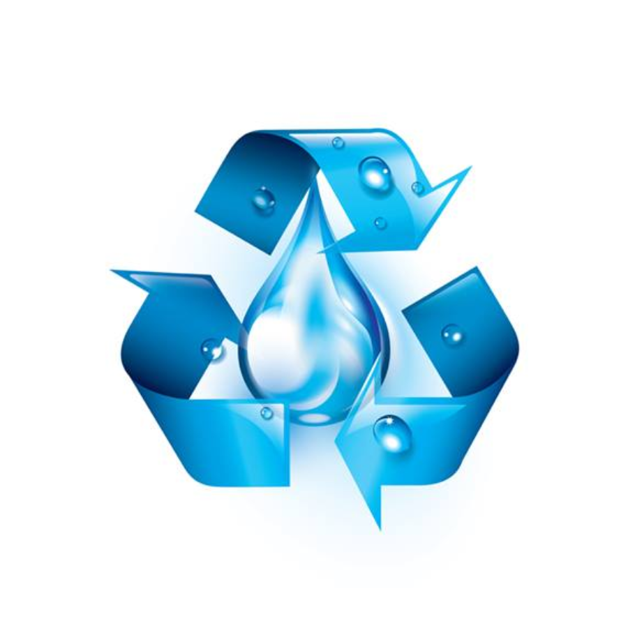

Reuso da água
A crescente pressão sobre os recursos hídricos, agravada pela urbanização acelerada e pelas mudanças climáticas, exige soluções inovadoras e eficientes. Neste contexto, os Sistemas de Reúso de Água com Internet das Coisas (IoT) para Agricultura Urbana emergem não apenas como uma alternativa tecnológica, mas como uma revolução indispensável para a construção de cidades verdadeiramente sustentáveis e resilientes. Esses sistemas representam a sinergia perfeita entre a necessidade urgente de conservação da água, a demanda por produção local de alimentos e o poder transformador da tecnologia digital. A essência desses sistemas reside na captação, tratamento inteligente e redistribuição eficiente de águas residuais – predominantemente as chamadas águas cinzas (provenientes de chuveiros, lavatórios e máquinas de lavar) – para alimentar hortas comunitárias, jardins produtivos, telhados verdes e fazendas verticais no coração das metrópoles ou em suas periferias. O coração tecnológico deste modelo é a Internet das Coisas (IoT), que confere inteligência e autonomia a todo o ciclo de reúso. Sensores distribuídos estrategicamente monitoram em tempo real parâmetros críticos da água em diferentes estágios: desde a qualidade inicial do efluente (níveis de pH, turbidez, condutividade, presença de sólidos, compostos orgânicos) até as condições específicas no ponto de irrigação (umidade do solo, necessidades nutricionais das plantas, condições climáticas locais). Esta rede de sensores gera um fluxo contínuo de dados massivos (Big Data), que são transmitidos via protocolos sem fio (como LoRaWAN, NB-IoT ou Wi-Fi) para uma plataforma central em nuvem ou borda (edge computing). Aqui, algoritmos de inteligência artificial e aprendizado de máquina processam e analisam essas informações, transformando-as em insights acionáveis. A automação é o próximo passo crucial. Com base nas análises, o sistema IoT comanda atuadores para regular automaticamente o processo de tratamento – ajustando dosagens de produtos químicos ou ativando/deativando estágios de filtragem biológica ou física – garantindo que a água tratada atinja o padrão exato requerido para irrigação segura de cultivos alimentares. Simultaneamente, o sistema de irrigação é acionado de forma precisa e sob demanda, liberando a quantidade ótima de água, no momento ideal (evitando evaporação, por exemplo) e diretamente na zona radicular das plantas, graças a tecnologias como gotejamento ou sub-irrigação controladas por IoT. Esta abordagem elimina o desperdício inerente aos métodos tradicionais, onde a irrigação muitas vezes segue calendários fixos, ignorando as reais necessidades das plantas e as condições ambientais momentâneas. Os benefícios deste casamento entre reúso de água e IoT na agricultura urbana são profundos e multifacetados. A conservação de água potável é o impacto mais direto e vital. Ao desviar e tratar águas cinzas para fins agrícolas, reduz-se drasticamente a demanda sobre os mananciais e os sistemas públicos de abastecimento, um ganho incalculável em regiões de estresse hídrico. A produção local de alimentos ganha viabilidade e escala, reduzindo a dependência de longas cadeias de suprimentos, diminuindo a pegada de carbono do transporte e garantindo acesso mais fresco e nutritivo a vegetais e hortaliças para os moradores urbanos, contribuindo para a segurança alimentar. Economicamente, há redução significativa nos custos tanto com a aquisição de água tratada para irrigação quanto com o tratamento centralizado de esgotos, já que parte do efluente é tratada e utilizada localmente. A sustentabilidade ambiental é amplificada: além da economia de água, reduz-se a carga poluente lançada em rios e oceanos, promove-se a reciclagem de nutrientes presentes nas águas residuais (que podem ser parcialmente aproveitados pelas plantas) e incrementa-se a biodiversidade e o conforto térmico urbano através das áreas verdes produtivas. Além disso, a transparência e o controle oferecidos pela IoT fortalecem a confiança da comunidade na segurança da água de reúso utilizada, um aspecto social crucial para a aceitação e o sucesso desses projetos. Claro, desafios existem e precisam ser superados. O investimento inicial em infraestrutura de tratamento e tecnologia IoT ainda pode ser uma barreira, embora os custos venham caindo rapidamente e o retorno sobre o investimento (ROI) se torne cada vez mais atrativo com a economia de água e energia no longo prazo. A manutenção técnica dos sensores e sistemas requer capacitação local ou suporte especializado. Questões regulatórias precisam evoluir para estabelecer padrões claros e seguros para o reúso de água na agricultura, especialmente para cultivos alimentares. E a alfabetização digital das comunidades envolvidas é essencial para o pleno aproveitamento e gestão participativa do sistema. Apesar dos obstáculos, o potencial transformador dos Sistemas de Reúso de Água com IoT para Agricultura Urbana é inegável. Eles personificam a transição para uma economia circular da água dentro do ecossistema urbano, onde um "resíduo" se torna um recurso valioso, impulsionado por dados e automação. Mais do que uma solução técnica, eles representam um novo paradigma de gestão urbana: inteligente, eficiente, regenerativo e centrado na resiliência local. À medida que as cidades continuam a se expandir e os recursos se tornam mais escassos, integrar inteligentemente o tratamento descentralizado de águas residuais com a produção local de alimentos, mediada pela onipresença digital da IoT, não é mais uma opção futurista, mas uma necessidade premente para garantir a viabilidade e a qualidade de vida nas metrópoles do século XXI. É a materialização de uma cidade que não apenas consome, mas que também recicla, produz e prospera em harmonia com seus limites naturais.